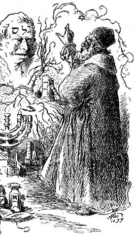

1 The Golem of Prague
As he opened the chapter, McElreath told us that
ultimately Judah was forced to destroy the golem, as its combination of extraordinary power with clumsiness eventually led to innocent deaths. Wiping away one letter from the inscription emet to spell instead met, “death,” Rabbi Judah decommissioned the robot.
1.1 Statistical golems
Scientists also make golems. Our golems rarely have physical form, but they too are often made of clay, living in silicon as computer code. These golems are scientific models. But these golems have real effects on the world, through the predictions they make and the intuitions they challenge or inspire. A concern with “truth” enlivens these models, but just like a golem or a modern robot, scientific models are neither true nor false, neither prophets nor charlatans. Rather they are constructs engineered for some purpose. These constructs are incredibly powerful, dutifully conducting their programmed calculations. (McElreath, 2020, p. 1, emphasis in the original)
There are a lot of great points, themes, methods, and factoids in this text. For me, one of the most powerful themes interlaced throughout the pages is how we should be skeptical of our models. Yes, learn Bayes. Pore over this book. Fit models until late into the night. But please don’t fall into blind love with their elegance and power. If we all knew what we were doing, there’d be no need for science. For more wise deflation along these lines, do check out A personal essay on Bayes factors, Between the devil and the deep blue sea: Tensions between scientific judgement and statistical model selection (Navarro, 2019) and Science, statistics and the problem of “pretty good inference”, a blog, paper and talk by the inimitable Danielle Navarro.
Anyway, McElreath left us no code or figures to translate in this chapter. But before you skip off to the next one, why not invest a little time soaking in this chapter’s material by way of a lecture by McElreath, himself? He’s an engaging speaker and the material in his online lectures does not entirely overlap with that in the text. Here’s the first lecture from his Winter 2019 course:
Session info
At the end of every chapter, I use the sessionInfo() function to help make my results more reproducible.
sessionInfo()R version 4.5.1 (2025-06-13)
Platform: aarch64-apple-darwin20
Running under: macOS Ventura 13.4
Matrix products: default
BLAS: /Library/Frameworks/R.framework/Versions/4.5-arm64/Resources/lib/libRblas.0.dylib
LAPACK: /Library/Frameworks/R.framework/Versions/4.5-arm64/Resources/lib/libRlapack.dylib; LAPACK version 3.12.1
locale:
[1] en_US.UTF-8/en_US.UTF-8/en_US.UTF-8/C/en_US.UTF-8/en_US.UTF-8
time zone: America/Chicago
tzcode source: internal
attached base packages:
[1] stats graphics grDevices utils datasets methods base
loaded via a namespace (and not attached):
[1] assertthat_0.2.1 digest_0.6.39 R6_2.6.1 fastmap_1.2.0 xfun_0.55 magrittr_2.0.4 glue_1.8.0
[8] stringr_1.6.0 knitr_1.51 htmltools_0.5.9 rmarkdown_2.30 lifecycle_1.0.5 cli_3.6.5 vctrs_0.7.0
[15] compiler_4.5.1 httr_1.4.7 vembedr_0.1.5 rstudioapi_0.17.1 tools_4.5.1 evaluate_1.0.5 yaml_2.3.12
[22] rlang_1.1.7 jsonlite_2.0.0 htmlwidgets_1.6.4 stringi_1.8.7
Comments